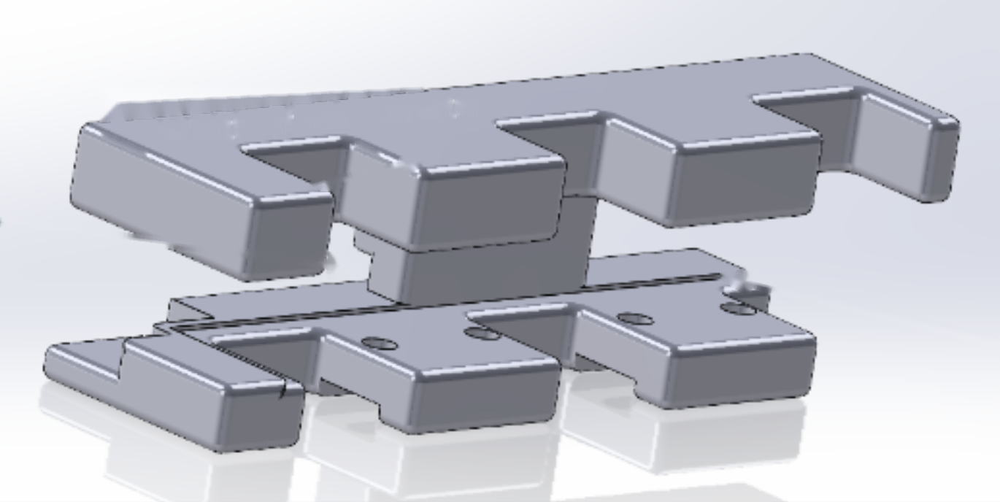

01
Group Projects
 No. 001
No. 001
No. 001
Walking Toothless Dragon
A 3D-printed, servo-driven quadruped walking robot modeled after Toothless from How to Train Your Dragon.
02
Professional Work

No. 002High-Precision Measurement Fixture
A fixture designed to hold tight-tolerance parts steady for repeatable micrometer measurement.